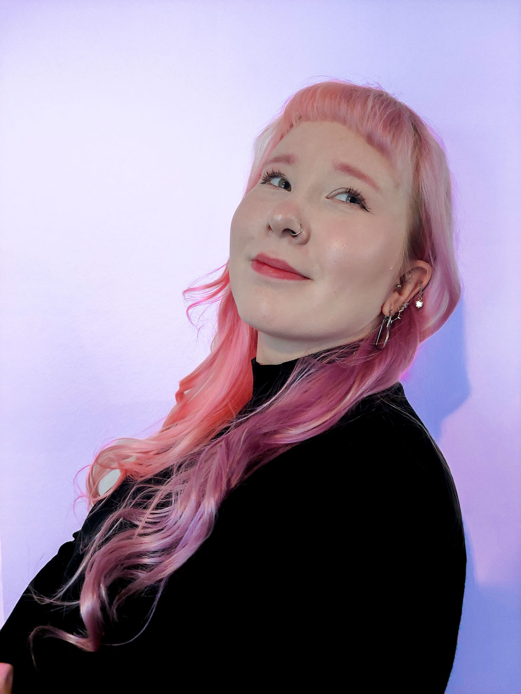

I'm Beniitta Huttunen
A Web Developer Student

About me
Hi! My name is Beniitta Huttunen. I'm a Full Stack Web Developer student at Business College Helsinki. Currently living my dream of becoming a web developer and working hard to make it happen.
I love problem solving, tackling new challenges, and building things from scratch. Getting stuck on tough challenges and finally finding solutions is what keeps me going and makes me want to learn more.